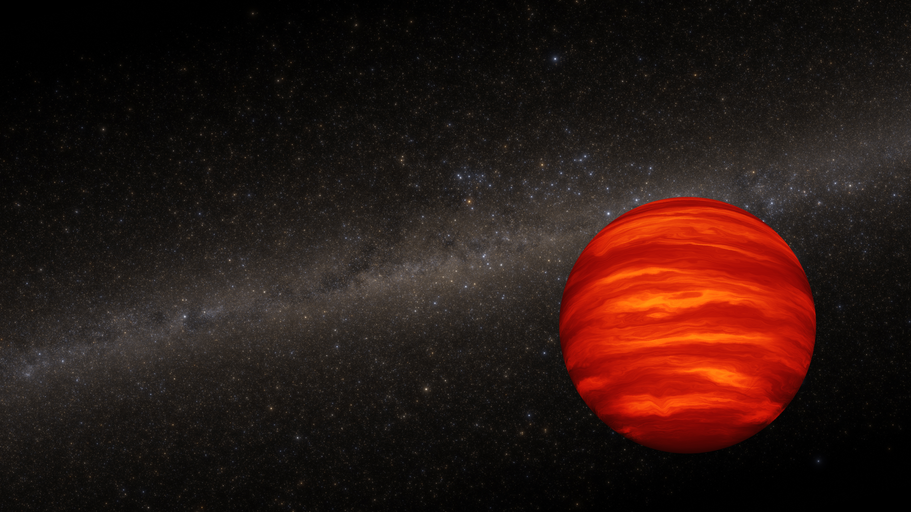

IMAGE: Brown Dwarf Illustration | IMAGE CREDIT: NASA, ESA, Joseph Olmsted (STScI)
Dusty's Log Entry:
- Type: substellar object
- Temperature: 250 - 2,800 K
- Mass: about 13 - 80 Jupiters
- Lifespan: cools and fades forever
- What's Next: keeps cooling
Brown dwarfs are between stars and planets. While they form like stars through nebulae, they're too small. Because of their weak mass, they're unable to sustain hydrogen fusion like every other star. As such, brown dwarfs simply glow faintly and slowly cool forever. Brown dwarfs are mainly magenta, purple, or black to the naked eye. Their name was simply to imply a color between that of red and black.
Examples of brown dwarfs include Gliese 229 B and Luhman 16 AB.